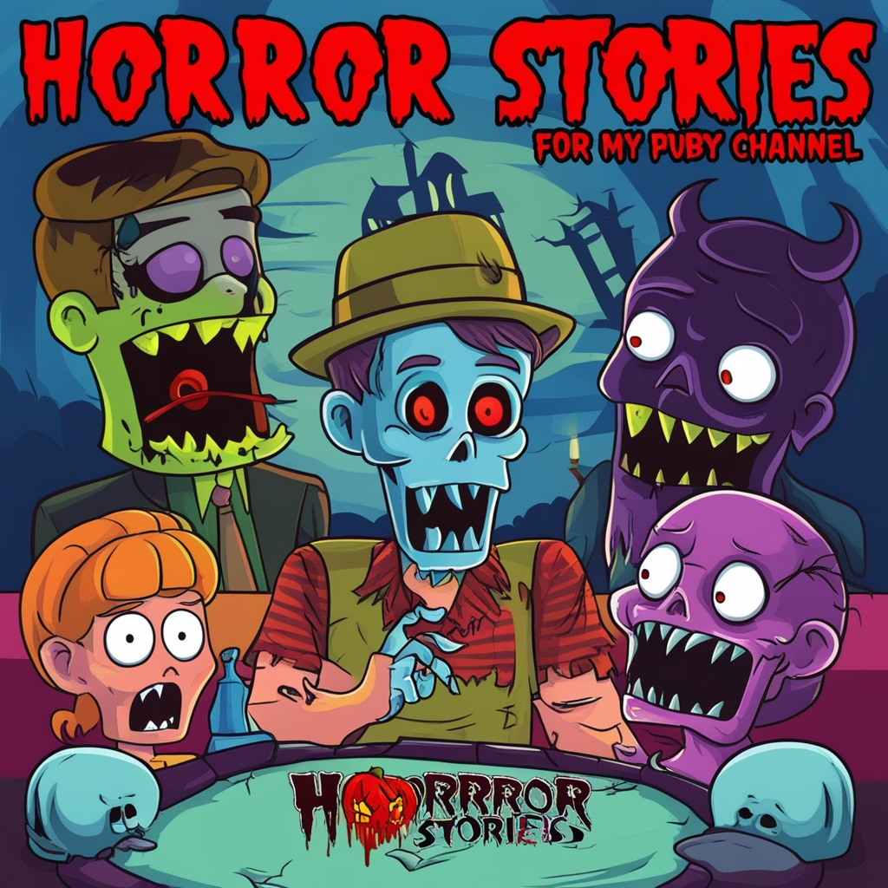

Algunos libros de terror y suspenso son:
- It de Stephen King
- La maldición de Hill House de Shirley Jackson
- El cementerio de animales de Stephen King
- La mujer de negro de Susan Hill
- Drácula de Bram Stoker
- El resplandor de Stephen King
La literatura de terror es un género que busca asustar y aterrorizar a sus lectores, provocando sentimientos de miedo, horror y terror. Los cuentos de terror son composiciones literarias breves que buscan provocar inquietud o escalofríos.
